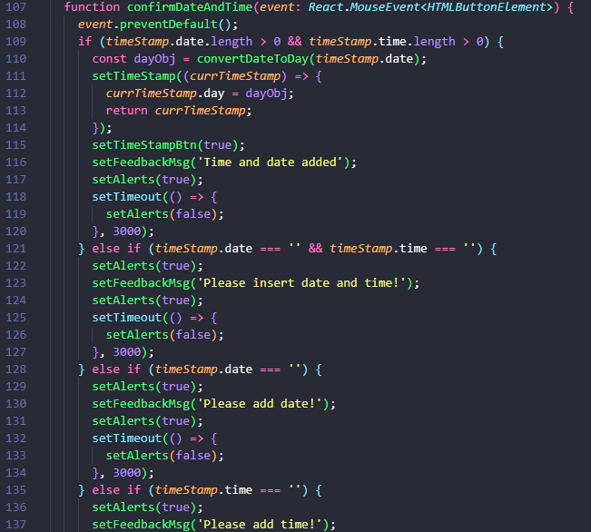
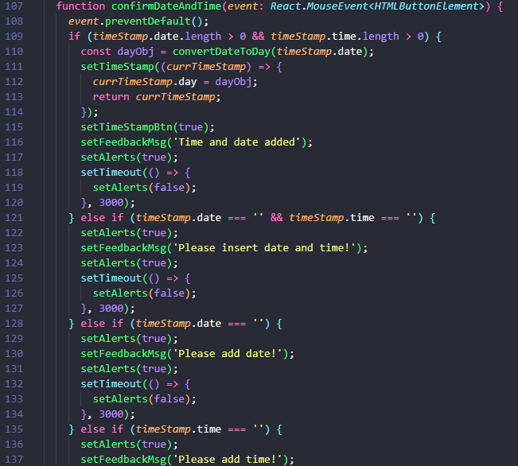

ABOUT ME
Hi there, I'm Jenny Zhang!
I'm a junior software developer as of January 2024, using Javascript and SQL database to create full-stack applications/web. Excited to embark on an exciting journey into tech, contribute my knowledge and skills into the industury, aspired to join the game sector specifically. And to learn new languages to further enrich my personal development.
Oh, I also make small projects here and there, you can check them out on here!
SKILL PROFICENCY
Typescript
Node.js
Express.js
Firebase
Javascript
CSS
PostgresSQL
Git/Github
Give it some time, it's brewing!
WANT TO CONNECT?
LinkedIn GitHubAnimal Crossing DOM Matching Game
As a part of the Northcoder's Software Development bootcamp, one of the lessons were to ultilise the DOM to manipulate HTML pages, as the sprint did not get completed. I took the liberty to further consolidate my understanding of DOM with this simple and quick mini game, styled with CSS.


 Source code
Source code
2024 Meet Me in the Middle/MMITM
A full stack application made using: Firebase forbackend database storage, authentification and hosting, TypeScript as the main language, a mixture of Google API calls to retrieve relevent information and styled with a combination of Tailwind and Daisy UI. This app was created with a collaborative effort from 3 other students at Northcoder's, challenging us to learn and explore new technology available to use, allowing freedome and creativity during this process.
small slide show about the projects, showing the source codes and the webpage set up
Source code Hosted Version 



2023 NC News Front end project
small slide show about the projects, showing the source codes and the webpage set up
2023 NC New Backend API
Small intro about the project
small slide show about the projects, showing the source codes and the webpage set up